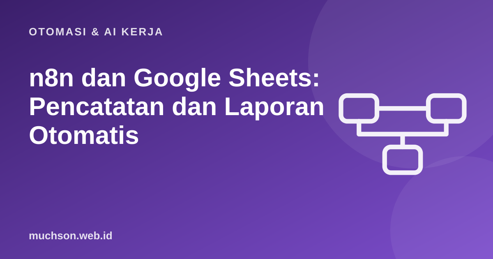

Beranda › Artikel › Otomasi & AI Kerja
Otomasi & AI Kerjan8n dan Google Sheets: Pencatatan dan Laporan Otomatis
Google Sheets adalah "basis data" yang paling akrab bagi banyak usaha kecil: pesanan, stok, absensi, daftar peserta. Menggabungkannya dengan n8n mengubah spreadsheet pasif menjadi sistem yang mencatat sendiri, menghitung sendiri, dan melaporkan sendiri setiap pagi.
Sebaiknya sudah paham: dasar n8n, akun Google

Setelah membaca dan mencoba materi ini, Anda mampu:
- menyambungkan n8n ke Google Sheets dengan credential yang benar
- memakai operasi Append, Get Row(s), Update, dan Append or Update
- memetakan kolom dan menjaga struktur sheet yang rapi
- menghindari duplikat dengan kolom kunci
- membuat laporan ringkasan terjadwal
n8n adalah alat visual; alur kerjanya dibuat di editor n8n, bukan di halaman ini. Contoh kode JavaScript di bawah meniru logika node Code dan dijalankan sungguhan dengan Node.js agar hasilnya dapat dibuktikan. Antarmuka dan nama node dapat berubah antar versi, jadi cocokkan dengan dokumentasi n8n.
Menyambungkan
- Di n8n tambahkan credential Google Sheets OAuth2 (ikuti panduan: buat proyek di Google Cloud, aktifkan Google Sheets API, buat OAuth client, izinkan redirect URL n8n Anda) atau gunakan Service Account dan bagikan sheet ke surel akun layanan itu.
- Beri akses minimum yang diperlukan: bila hanya membaca, pakai akses baca saja.
- Pilih dokumen dan sheet dari daftar; n8n membaca baris header sebagai nama kolom.
Operasi utama
| Operasi | Fungsi | Contoh pemakaian |
|---|---|---|
| Append Row | Menambah baris di akhir | Mencatat pesanan baru |
| Get Row(s) | Membaca baris, bisa dengan filter | Mengambil pesanan hari ini |
| Update Row | Mengubah baris berdasarkan kolom pencocok | Mengubah status menjadi "Dikirim" |
| Append or Update | Perbarui jika kunci ada, tambah jika belum | Mencegah duplikat peserta |
| Delete Rows | Menghapus baris/kolom | Hati-hati; sering lebih aman menandai "arsip" |
Rancang sheet seperti tabel basis data: satu baris header di baris 1, satu kolom ID unik, tanpa sel digabung, tanpa baris kosong di tengah, dan satu jenis data per kolom. Sheet yang rapi membuat otomasi andal; sheet "cantik" untuk dicetak membuatnya rapuh.
Pemetaan kolom dan deduplikasi
// Pemetaan di node Google Sheets (mode "Map Each Column Manually"):
// Tanggal <- {{ $now.setZone('Asia/Jakarta').toFormat('yyyy-MM-dd HH:mm') }}
// IdPesanan <- {{ $json.body.idPesanan }}
// Nama <- {{ $json.body.nama }}
// Total <- {{ $json.body.jumlah * $json.body.harga }}
// Status <- Baru
// Operasi "Append or Update Row" dengan kolom pencocok = IdPesanan
// -> kiriman ulang pesanan yang sama memperbarui baris, bukan menambah baris baru.Laporan harian: agregasi data
Alur populer: setiap pukul 07.00 baca pesanan kemarin, hitung ringkasan, kirim ke WhatsApp atau surel. Logika agregasinya dapat ditulis di node Code. Berikut peragaan dengan data contoh:
const baris = [
{ tanggal: '2026-10-29', idPesanan: 'A1', produk: 'Kopi', jumlah: 2, harga: 20000, status: 'Selesai' },
{ tanggal: '2026-10-29', idPesanan: 'A2', produk: 'Teh', jumlah: 1, harga: 15000, status: 'Selesai' },
{ tanggal: '2026-10-29', idPesanan: 'A3', produk: 'Kopi', jumlah: 3, harga: 20000, status: 'Batal' },
{ tanggal: '2026-10-29', idPesanan: 'A4', produk: 'Kopi', jumlah: 1, harga: 20000, status: 'Selesai' },
{ tanggal: '2026-10-28', idPesanan: 'A0', produk: 'Teh', jumlah: 5, harga: 15000, status: 'Selesai' },
{ tanggal: '2026-10-29', idPesanan: 'A2', produk: 'Teh', jumlah: 1, harga: 15000, status: 'Selesai' }, // duplikat
];
const kemarin = '2026-10-29';
const unik = [...new Map(baris.map(b => [b.idPesanan, b])).values()]; // buang duplikat per IdPesanan
const hariIni = unik.filter(b => b.tanggal === kemarin && b.status === 'Selesai');
const perProduk = {};
for (const b of hariIni) {
perProduk[b.produk] ??= { jumlah: 0, omzet: 0 };
perProduk[b.produk].jumlah += b.jumlah;
perProduk[b.produk].omzet += b.jumlah * b.harga;
}
const totalOmzet = Object.values(perProduk).reduce((s, p) => s + p.omzet, 0);
const rupiah = n => 'Rp' + n.toLocaleString('id-ID');
let pesan = `Laporan ${kemarin}\nPesanan selesai: ${hariIni.length}\n`;
for (const [produk, p] of Object.entries(perProduk)) pesan += `- ${produk}: ${p.jumlah} pcs, ${rupiah(p.omzet)}\n`;
pesan += `Total omzet: ${rupiah(totalOmzet)}`;
console.log(pesan);Laporan 2026-10-29
Pesanan selesai: 3
- Kopi: 3 pcs, Rp60.000
- Teh: 1 pcs, Rp15.000
Total omzet: Rp75.000Tips dan batas
- Batas API: Google membatasi jumlah permintaan per menit; hindari membaca sheet berulang di loop. Ambil sekali, olah di memori.
- Sheet besar: di atas puluhan ribu baris pertimbangkan basis data sungguhan (PostgreSQL, Supabase, Airtable).
- Konkurensi: dua eksekusi yang menulis bersamaan dapat berebut; gunakan Append or Update dan ID unik.
- Format tanggal: simpan sebagai teks ISO (yyyy-MM-dd) agar perbandingan tidak bergantung pada pengaturan lokal.
- Pengaman: jangan memberi otomasi akses ke sheet yang berisi data yang tidak diperlukan; salin data yang perlu ke sheet khusus.
1. Tambahkan hitung jumlah pesanan batal ke laporan.
2. Mengapa format tanggal ISO?
3. Bagaimana mengirim laporan bila tidak ada pesanan?
4. Kapan sebaiknya beralih dari Sheets?
- Sambungkan lewat OAuth2 atau Service Account dengan akses minimum.
- Sheet rapi: header, ID unik, satu jenis data per kolom.
- Append or Update mencegah duplikat; ambil data sekali lalu agregasi di Code.
- Jadwalkan laporan, tangani kasus kosong, dan sadari batas API serta ukuran data.